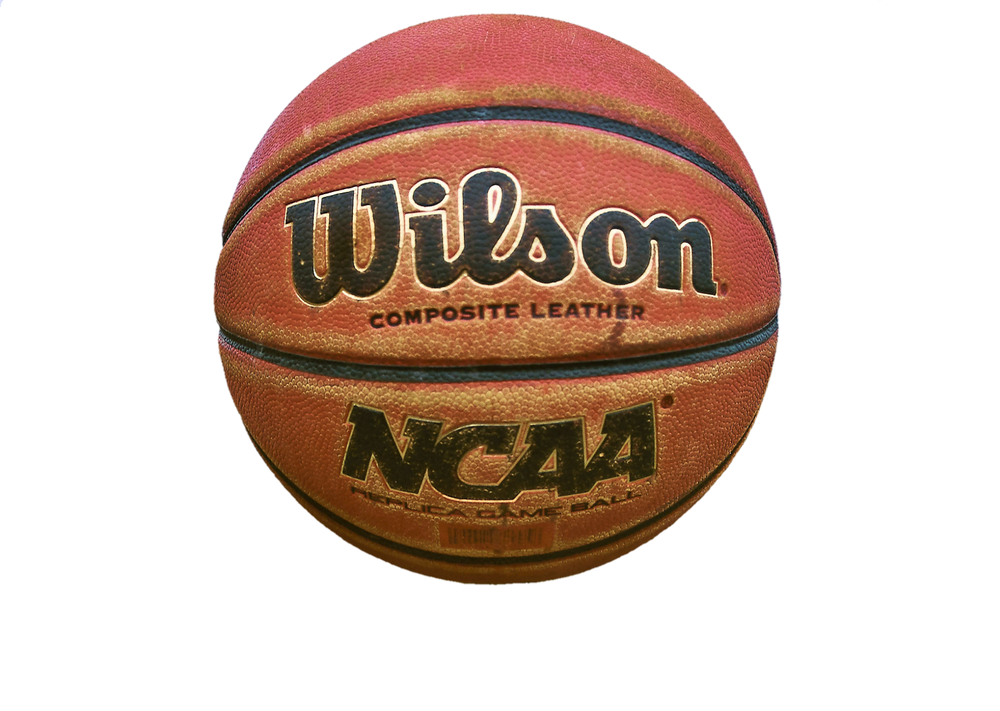

Moje hobby - koszykówka

Kulista, skórzana i szorstka, wypełniona sprężonym powietrzem.
Średnica piłki używanej wynosi 23 cm.
Piłki do gry w hali wykonane są ze skóry naturalnej,
natomiast te przeznaczone do gry w obiektach otwartych
- ze skóry kompozytowej. Ważnymi parametrami są sprężystość, oraz zdolność do chwytania.
Powinny być zatem odporne na zabrudzenia, oraz wytarcia. Piłki gumowe stanowią niższą klasę.
Charakteryzują się szybszym zużyciem, niższą ceną, oraz gorszymi parametrami. Przeznaczone są głównie dla dzieci.
W meczach FIBA używa się piłek spełniających wszystkie wymogi FIBA, a także dodatkowo przed meczem sędzia wybiera najlepszą piłkę,
która spuszczona z wysokości 1,80m powinna odbić się od twardego podłoża na wysokość 1,20-1,40m